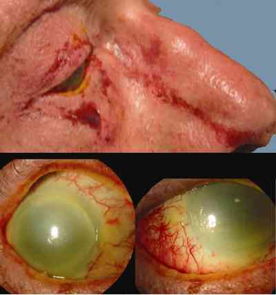
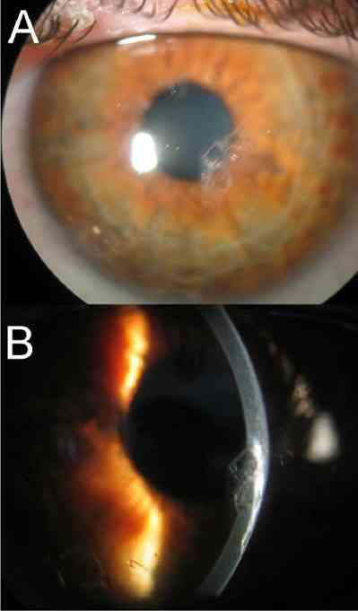
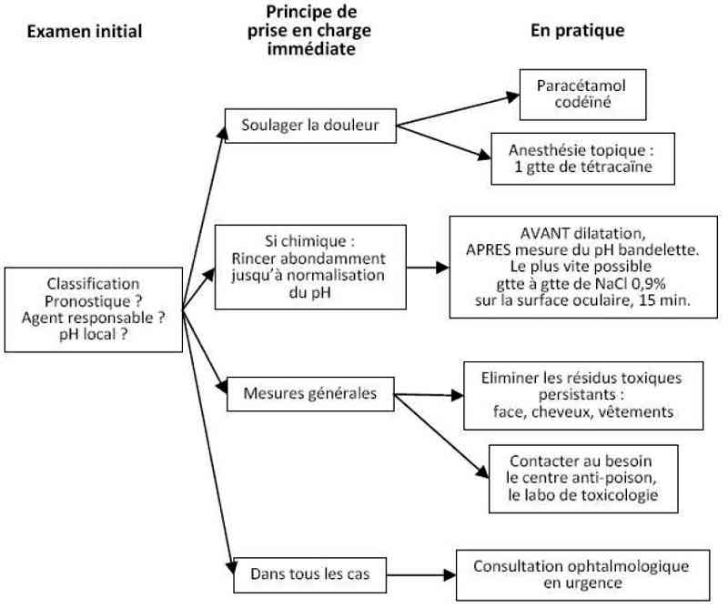

Bienvenue Sur Medical Education
Brûlure oculaire
Spécialité : ophtalmologie /
Points importants
Savoir
- Les acides dénaturent les protéines immédiatement ; l'effet toxique est maximal immédiatement
- Les bases se combinent aux protéines ; l'effet toxique est retardé
Connaître la nature du toxique à l'origine de la brûlure
Eliminer un corps étranger (CE) toxique
- Sous-palpébral
- Dans les VAS
Classification de Roper-Hall
-
Grade 1 : très bon pronostic
- désépithélialisation cornéenne isolée
-
Grade 2 : bon pronostic
- atteinte épithéliale et stromale (mais détails iriens visibles) + ischémie < 1/3 de la conjonctive limbique (limbe blanc++)
-
Grade 3 : pronostic réservé
- désépithélialisation totale + opacité masquant les détails iriens et ischémie entre 1/3 et 1/2 de la conjonctive limbique
-
Grade 4 : pronostic péjoratif
- opacité totale et ischémie > 1/2 de la conjonctive limbique
Présentation clinique / CIMU
SIGNES FONCTIONNELS
-
Douleur oculaire inconstante
-
Larmoiement
-
Blépharospasme (occlusion palpébrale réflexe avec résistance à l'ouverture forcée)
-
Baisse d'acuité visuelle brutale (flou)
-
Stade peu évolué :
-
hyperhémie conjonctivale
-
Stade évolué :
-
désépithélialisation cornéenne isolée ou opacité cornéenne masquant les détails iriens
-
possible ischémie de la conjonctive limbique : limbe blanc++
- hyperhémie conjonctivale
- désépithélialisation cornéenne isolée ou opacité cornéenne masquant les détails iriens
- possible ischémie de la conjonctive limbique : limbe blanc++
 _177 Photo Ischémie totale de la surface oculaire par instillation criminelle de soude
CONTEXTE
ATCD
- Statut vaccinal
Circonstances de survenue
- Accident du travail
- Activité à risque de projection toxique (maçonnerie, ménage, laboratoire...)
- Projection de toxique ayant atteint la surface oculaire (brûlures par radiation ou température rares)
EXAMEN CLINIQUE
Examen sous anesthésie topique, si douleur avec blépharospasme (chlorhydrate d'oxybuprocaïne, une goutte, attendre 15 sec)
Examen des 2 yeux et des paupières (examen immédiat = pronostic)
-
En lumière blanche, recherche :
- ischémie limbique
- opacité cornéenne
- hyphéma
- lésions palpébrales
- En lumière bleue (ou éventuellement verte) après instillation d'une goutte de fluorescéine (couleur orange, unidose) : quantifie l'aire cornéenne de désépithélialisation
Rechercher un CE associé
 _32 Photo Corps étranger intracornéen
Signe de Seidel positif : il met en évidence une fuite extra-oculaire de fluide habituellement indétectable à l'examen simple
Photo
Signe de Seidel positif
EXAMENS PARACLINIQUES SIMPLES
Analyse de la nature et du pH du toxique en cause au besoin (si contact de la surface oculaire avec un toxique de nature acide, basique ou amphotère) par bandelette pH :
- Appliquer entre la paupière et l'oeil
- Avant et après rinçage
Contact du centre antipoison pour information sur l'agent toxique
CIMU
- Tri 1 pour rinçage immédiat
Diagnostic étiologique
-
Contexte évocateur
Diagnostic différentiel
-
Corps étranger intra-oculaire (pouvant être associé)
Traitement
TRAITEMENT PREHOSPITALIER/INTRAHOSPITALIER
Diagnostic différentiel
- Corps étranger intra-oculaire (pouvant être associé)
Traitement
TRAITEMENT PREHOSPITALIER/INTRAHOSPITALIER
Stabilisation initiale
- Rincer la surface oculaire au sérum physiologique NaCl 0,9% jusqu'à normalisation du pH à la bandelette (entre 7,20 et 7,50)
Suivi du traitement
- Cycloplégie transitoire (dilatation pupillaire et paralysie de l'accommodation) si douleur importante
- Pansement occlusif non compressif
- Antalgiques de classe 2 (paracétamol codéine plus efficace que dextropropoxifène)
- Consultation ophtalmologique en urgence
TRAITEMENT MEDICAMENTEUX
Rincer
- Infusion continue sur la surface oculaire à l'aide d'une tuyauterie de perfusion connectée à une poche (flacon) de NaCl 0,9%, pendant 15 min
Antalgiques
- Chlorhydrate d'oxybuprocaïne (agit en 15 sec pendant environ 30 min) ou tétracaïne (agit en 2 min pendant environ 60 min), 1 goutte, ne pas renouveler
- Paracétamol codéine effervescent 500 mg/30 mg cp : 1 (< 50 kg) à 2 (≥ 50 kg)
Cycloplégie
- Homatropine bromhydrate 1% : 1 goutte
Surveillance
CLINIQUE
-
Normalisation du pH de la surface oculaire à la bandelette
Devenir / orientation
CRITERES D'ADMISSION
-
Jamais d'hospitalisation à l'UHCD si atteinte oculaire pure
-
Prise en charge immédiate par un ophtalmologiste et hospitalisation en ophtalmologie (éventuelle greffe de membrane aminotique en urgence)
ORDONNANCE DE SORTIE
-
Pansement oculaire sec non compressif
-
Antalgiques oraux si douleur (la douleur n'est pas systématique et est en règle générale inversement proportionnelle à la gravité des lésions)
RECOMMANDATIONS DE SORTIE
-
Consulter un ophtalmologiste en urgence
Mécanisme / description
-
Les acides dénaturent les protéines immédiatement
-
L'effet toxique est maximal immédiatement
-
La pénétration tissulaire des acides est limitée
-
Les bases se combinent aux phospholipides membranaires ; l'effet toxique est retardé ; la pénétration des bases est importante
-
L'ischémie limbique et l'atteinte des fonctions lacrymales (ductules excréteurs de la glande lacrymale, cellules caliciformes conjonctivales, glandes meibomiennes) conditionnent le pronostic fonctionnel
-
La gravité des lésions et directement liée au délai de rinçage de la surface oculaire (patient lui-même, médecin, tiers) et à la mise en place d'un traitement adapté aux lésions (ophtalmologiste)
-
Par rapport aux brûlures chimiques, les brûlures thermiques se distinguent par le fait que :
-
il n'y a pas de diffusion des lésions au delà de la zone d'application
-
les lésions sont progressivement décroissantes depuis le point d'application vers la profondeur
-
les lésions sont définies dès la fin de l'application d'une source thermique et ne s'aggraveront plus
Algorithme
-
Aglorithme brûlure oculaire
Devenir / orientation
CRITERES D'ADMISSION
- Jamais d'hospitalisation à l'UHCD si atteinte oculaire pure
- Prise en charge immédiate par un ophtalmologiste et hospitalisation en ophtalmologie (éventuelle greffe de membrane aminotique en urgence)
ORDONNANCE DE SORTIE
- Pansement oculaire sec non compressif
- Antalgiques oraux si douleur (la douleur n'est pas systématique et est en règle générale inversement proportionnelle à la gravité des lésions)
RECOMMANDATIONS DE SORTIE
- Consulter un ophtalmologiste en urgence
Mécanisme / description
-
Les acides dénaturent les protéines immédiatement
-
L'effet toxique est maximal immédiatement
-
La pénétration tissulaire des acides est limitée
-
Les bases se combinent aux phospholipides membranaires ; l'effet toxique est retardé ; la pénétration des bases est importante
-
L'ischémie limbique et l'atteinte des fonctions lacrymales (ductules excréteurs de la glande lacrymale, cellules caliciformes conjonctivales, glandes meibomiennes) conditionnent le pronostic fonctionnel
-
La gravité des lésions et directement liée au délai de rinçage de la surface oculaire (patient lui-même, médecin, tiers) et à la mise en place d'un traitement adapté aux lésions (ophtalmologiste)
-
Par rapport aux brûlures chimiques, les brûlures thermiques se distinguent par le fait que :
-
il n'y a pas de diffusion des lésions au delà de la zone d'application
-
les lésions sont progressivement décroissantes depuis le point d'application vers la profondeur
-
les lésions sont définies dès la fin de l'application d'une source thermique et ne s'aggraveront plus
Algorithme
-
Aglorithme brûlure oculaire
- il n'y a pas de diffusion des lésions au delà de la zone d'application
- les lésions sont progressivement décroissantes depuis le point d'application vers la profondeur
- les lésions sont définies dès la fin de l'application d'une source thermique et ne s'aggraveront plus
Algorithme
- Aglorithme brûlure oculaire
 _636 Algorithme Algorithme : brûlure oculaire
Bibliographie
-
Renard G. Physiopathologie des brûlures oculaires. J Fr Ophtalmol 2004;27(10):1164-9
Auteur(s) : Jean-Louis BOURGES